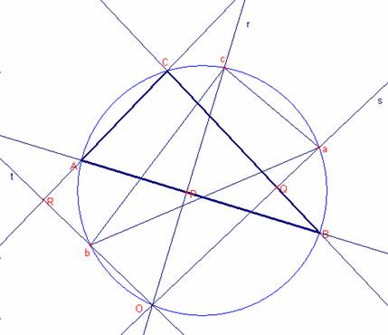
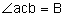
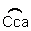

Problema 276
25. O és un punt sobre la circumferència circumscrita al triangle . Demostreu que si les perpendiculars des de O als costats AB, AC i BC tallen la circumferència en els punts c, b i a, el triangle és igual en tots els aspectes al triangle
. Demostreu que si les perpendiculars des de O als costats AB, AC i BC tallen la circumferència en els punts c, b i a, el triangle és igual en tots els aspectes al triangle  [Nota del director: tenen els mateixos costats i angles, encara que l’ordre és diferent]
[Nota del director: tenen els mateixos costats i angles, encara que l’ordre és diferent]
a) Estudieu quines transformacions hem de sotmetre  per a transformar-se en el triangle de manera que es solapen exactament [afegit pel director]
per a transformar-se en el triangle de manera que es solapen exactament [afegit pel director]
Aref, M.N., Wernick,W. (1968): Problems &Solutions in Euclidean Geometry. Dover Publications, Inc, New York. (pag. 97)
Solució:
 |
Siga el triangle
Siga la recta r que passa per O i és perpendicular a  que talla la circumferència en el punt c.
que talla la circumferència en el punt c.
Siga la recta s que passa per O i és perpendicular al  que talla la circumferència en el punt a.
que talla la circumferència en el punt a.
Siga la recta t que passa per O i és perpendicular al  que talla la circumferència en el punt c.
que talla la circumferència en el punt c.
Siga P la intersecció de la recta r i la recta AB.
Siga Q la intersecció de la recta s i la recta BC.
Siga R la intersecció de la recta t i la recta AC.
Considerem el quadrilàter ROQC
 ,
, 
Aleshores, . Aleshores,  .
.
Aleshores, .
Considerem el quadrilàter AROP
 ,
, 
Aleshores, . Aleshores,  .
.
Aleshores,  .
.
Aleshores, 
Per tant els triangles  , són iguals ja que tenen iguals els angles i ambdós estan inscrits en la mateixa circumferència per tant les cordes mesuren igual.
, són iguals ja que tenen iguals els angles i ambdós estan inscrits en la mateixa circumferència per tant les cordes mesuren igual.
a) Notem que els arcs , 
Aleshores, els triangles són simètrics respecte de la mediatriu del segment .
Aleshores donat el triangle  :
:
- Dibuixarem la recta r que passa per O i és perpendicular a
 que talla la circumferència en el punt c.
que talla la circumferència en el punt c. - Dibuixem la recta mediatriu m del segment .
- Dibuixem el punt a simètric de A respecte de m.
- Dibuixem el punt b simètric de B respecte de m.
- Dibuixem el triangle.
Amb Cabri:
Figure sol276peicat.fig
Applet created on 16/10/05 by Ricard Peiró with CabriJava